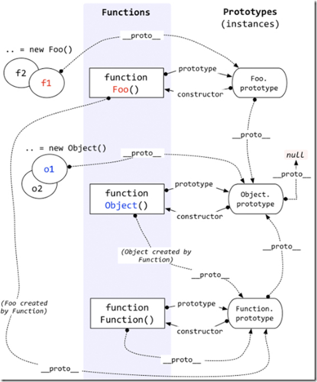

原型链图(先上图)

图片网上找的…
原理
原型链的继承
大家都知道面向对象有三大基本特性 ：封装、继承、多态。
继承是指让某个类型的对象获得另一个类型的对象的属性和方法。
而原型和原型链是Javascript实现继承的一种模型。
原型链的基本思想就是利用原型让一个引用类型继承另一个引用类型的属性和方法。原型链的构建是通过将一个类型的实例赋值给另一个构造函数的原型实现的。
Javascript在创建对象的时候，都有一个叫做proto的内置属性，用于指向创建它的构造函数的原型对象，也就是图片上的prototype（这个属性指向原型对象，只有函数才有）。
每个对象都有__proto__属性，指向所继承的上层对象，最顶级是null;
从图上看，可以看到null的上一个指针是指向Object.prototype,也就是说,可以把Object看做是一个构造函数(其实它就是一个内置的构造函数)，其他的方法就是基于这个类型继承而来的。var a = [];//这个同等于 var a = new Array();
var b = {}; // 同等于 var b = new Object();
console.log(a.__proto__ === Array.prototype) // true
console.log(b.__proto__ === Object.prototype) // true
我们发现a和b都有__proto__，分别指向了Array.prototype和Object.prototype。其实a,b都是内置的构造函数的实例对象，都基于类型分别继承了构造函数的prtotype。
平常写的时候感觉很正常，其实像Array、Object这样的函数内置对象还有 Date、Function、RegExp、Json、Math。
##构造函数
只要创建一个新函数，就会根据规则给这个函数创建一个prototype属性，这个属性指向函数的原型对象。
也可以这样理解，所有函数对象都指向Function.prototype，都是Function的实例。function Fn(){} console.log(Fn.__proto__ === Function.prototype) //true
也就是说，__proto__存在于实例与构造函数原型对象之间，而不是存在于实例与构造函数之间。也可以理解为原型链的形成主要还是看__proto__，而不是prototype。
趁项目做完，忙里偷闲弄下博客（以前的总结都在txt里，哈哈）。